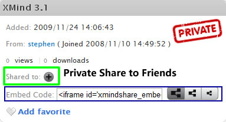

XMind.net で共有
XMind Share は、家族、友人、同僚、そして世界中の人々と、マインド マップを共有するための無料のオンライン サービスです。このサービスを楽しむ方法はここにあります。
マップをアップロード
- XMind アカウントが必要ですので、持っていない場合はどうぞサインアップ してください。
- Sign-in with our account in XMind while launching XMind or clicking Sign into XMind.net under help menu.
- マップを、開くか作成します。
- ツールバーの右端に [XMind.net にアップロードして共有] ボタンをクリックします。
- アップロードダイアログが表示され、マップ説明の追加、マップのプライバシーの設定、サムネイルの変更を行う必要があります。
- ダイアログの下部にある[アップロード]]ボタンをクリックし、マップをアップロードします。
それでは、アップロードダイアログ ボックスについて確認してみましょう
- 概要では、このマップの説明を追加することができます。

- プライバシーでは、マップの公開、非公開、プライベートの区分と、ダウンロードを許可するか設定します。
- プレビュー設定
Please note that,
- The title of uploaded map is the central topic.
- If you upload a map which has the same title with an existing online map uploaded by yourself, this uploaded map will not cover previous map. Instead, new map's url will have "-1" at the end.
Delete/Embed/Comment a map
アップロードが完了したら、メニューの[ヘルプ]→[アカウント(XMind ID)]を選択して、XMind 内のブラウザーでアップロードしたマップを確認することができます。
- Delete my online map via clicking the delete icon under map's thumbnail

- Emebed any a online map to my blog via pasting the Embed Code on that map page
 - Add comment to any a map.
マップビューアー
In this viewer, we can navigate the map. It also has another mode, Outline. Click the Outline on the bottom, we'll be able to read this map in a traditional way.
マップの共有
In the privacy page, we know any map can have three kind privacies, Public, Unlisted, and Private. The way to share maps with different privacies has a few differences
- Public Maps has no limitations, which can be seen by any person and searched by search engines.
- Unlisted Map can not be searched by search engine. They are not shown on XMind Share too. People, only who know map's URL, can read it.
- Private Map is available only for XMind Pro users. If you want to share a private map with some people, you should click the special Share to button and send the invitation to them. People, who get the invitation email, should at least have a free XMind Account for reading this private map.
We can share Public and Unlisted Map via sharing the map URL directly. Now we find that unlisted map is very useful to share a map in some special situation, such as at meeting, at class, and etc. And Private Map will be able to play an important role in collaborating within a small team, or share some special and important information.
このサービスは、Amazon S3 サービスによって実現しています。
こちらもご覧ください...